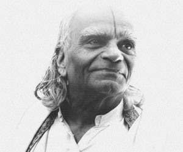

Iyengar Yoga, skapt av BKS Iyengar, er en form for Hatha Yoga er kjent for sin bruk av rekvisitter, som for eksempel belter, blokker og tepper, som hjelpemidler i å utføre asanas, stillinger. Den props at studentene skal kunne utføre asanas riktig, minimere risikoen for skade eller belastning, og gjøre Postures tilgjengelig for både unge og gamle. Utviklingen av styrke, bevegelighet og stabilitet vektlegges gjennom asanas.
Iyengar yoga er fast på den tradisjonelle åtte lemmer av yoga som tolket av Patanjalis i sin Yoga Sutraer.
En form for Hatha Yoga, fokuserer den på strukturelle justering av den fysiske kroppen gjennom utvikling av asanas. Gjennom praktisering av et system av asanas, sikter det å forene kropp, sinn og ånd for helse og velvære. Denne disiplinen er ansett som en kraftig verktøy for å avlaste stress av moderne hverdagen som igjen kan bidra til å fremme total fysisk og åndelig velvære.
Iyengar yoga er preget av stor oppmerksomhet på detaljer og nøyaktig fokus på kroppen innretting. Iyengar pioner i bruk av "rekvisitter" som puter, benker, blokker, stropper og sandsekker, som fungerer som hjelpemidler lar nybegynnere å oppleve asanas lettere og fullstendig enn ellers kanskje ikke ville være mulig uten flere års praksis. Props også tillate eldre, skadet, sliten eller syk studenter til å nyte fordelene av mange asanas via fullt ut "støttet" metoder som krever mindre muskuløse innsats.
Standing positurer vektlegges i Iyengar Yoga. De er sagt å bygge sterke bein, øke generell vitalitet og forbedre sirkulasjonen, koordinasjon og balanse, noe som sikrer et sterkt grunnlag for å studere mer avanserte positurer.
Det er ingen krav helsemessig for å utøve Iyengar yoga. Det passer for alle aldre, og det kan bare forbedre helsen din.
Hvis du har skader i for eks knærne eller ryggen, så brukes det mye utstyr i Iyengar yoga for å hjelpe til hvis du har skader eller ikke klarer å utøve stillingen skikkelig. Utstyrene blir også brukt av utøvere som vil utfordre seg mer og utføre hardere stillinger.
Iyengar yoga er tilgjengelig for alle. Regelmessig trening øker smidighet, styrke og utholdenhet, bedre holdning og konsentrasjon og quietens sinnet for å fremme trivsel.
Teknikken vektlegger presisjon og justering, og kvaliteten på bevegelse er prioritert fremfor kvantitet. Du lærer å bevege seg med letthet i kroppen din mens du arbeider innenfor dine begrensninger. Dette gjør stillinger (asanas) trygt å utføre.
Postures holdes lenger enn i noen andre stiler, slik at stramme muskler til å forlenge og slappe av, og bidrar til å fokusere bevisstheten. Rekvisitter, som tepper, blokker og belter, kan brukes til å forbedre din forståelse av positurer eller til å hjelpe hvis du har problemer.
Praksisen er progressiv, og bygge et stabilt fundament før du prøver mer krevende arbeid. Nybegynnere starter med stående positurer og er gradvis introdusert til et fyldigere rekke sittende og liggende stillinger, videresende extensions, inversjoner, twists, backbends og arm balanserer.
Hver gruppe av Postures utvikler kroppen i ulike, men gjensidig måter og har ulike kvaliteter: grunnstøting, energigivende, styrke, stimulerende, beroligende. Klasser på alle nivåer vie tid til avslapning. Når kropp og sinn er sterke nok til å sitte eller ligge i lengre perioder uten distraksjon, lærer pranayama (yoga puste). No to klasser er de samme: lærerne velge positurer fra de ulike grupper av positurer å understreke de ulike aspekter av praksis.
Alle lærere gjennomgår en streng opplæringsprogram, varig år. Mange ved instituttet har flere tiårs erfaring, reiser regelmessig til India for instruksjon. Iyengar yoga er blitt beskrevet som meditasjon i aksjon. Praktisering av stillinger med bevisstheten har en integrerende effekt og arbeider for å harmonisere kropp og sinn.
"Praksisen med yogasana på grunn av helse, å holde seg i form, eller å opprettholde fleksibiliteten er den eksterne praksisen med yoga. Selv om dette er et legitimt sted å begynne, er det ikke slutt", sier BKS Iyengar. "Selv i enkle asanas er en opplever de tre nivåene av søken. ytre søken som bringer fasthet av kroppen, den indre søken, som bringer stødighet av intelligens, og den innerste søken, som bringer velvilje ånd "
Oppsummert kan Iyengar metoden for Yoga sies å definere seg selv som forskjellig fra andre stiler av Yoga av tre hovedelementer, nemlig teknikk, rekkefølge og timing:
Teknikken innebærer at i praksis man lærer stadig finere justeringer i justeringen av hvordan man utfører ens asana og pranayama. Sequence refererer til sekvenser som asana og pranayama praktiseres. For eksempel ved å variere hvilke Postures praktiseres etter som, kan de mentale og emosjonelle effekter av praksis bli intensivert på en måte ikke annet er mulig for å få til endringer i hele sitt vesen inkludert de åndelige utvikling. Timing refererer til lengden av tid brukt i stillinger eller pranayama. Postures kan ikke gjøres raskt og uten bevissthet. Det tar tid å flytte inn i en holdning og bli stabilt. Når dette er oppnådd så en forblir stabilt i noen tid å intensivere dybden på kroppsholdning og så trekke sin fordel. Ellers potensielle effekter og fordeler forblir små i forhold til hva som er mulig.
Så man kan begynne å se hvordan Iyengar yoga dyrker alle 8 disipliner av yoga og er langt fra bare "gymnastikk og dype pust." Med praksis og forståelse, en innser at Asana (holdning) er så forskjellig fra stretching eller gymnastikk like Pranayama (Breath Control) er forskjellig fra bare dypt pust og meditasjon er forskjellig fra self-induced trance.
Den langvarige praksisen med asana og pranayama rammer den enkelte på en organisk (fysiologisk), mental og åndelig nivå samt bare fysisk.
"Praksisen med yogasana på grunn av helse, å holde seg i form, eller å opprettholde fleksibiliteten er den eksterne praksisen med yoga. Selv om dette er et legitimt sted å begynne, er det ikke slutt", sier BKS Iyengar. "Selv i enkle asanas er en opplever de tre nivåene av søken. ytre søken som bringer fasthet av kroppen, den indre søken, som bringer stødighet av intelligens, og den innerste søken, som bringer velvilje ånd "
Hver gruppe av Postures utvikler kroppen i ulike, men gjensidig måter og har ulike kvaliteter: grunnstøting, energigivende, styrke, stimulerende, beroligende. Klasser på alle nivåer vie tid til avslapning. Når kropp og sinn er sterke nok til å sitte eller ligge i lengre perioder uten distraksjon, lærer pranayama (yoga puste). No to klasser er de samme: lærerne velge positurer fra de ulike grupper av positurer å understreke de ulike aspekter av praksis.
Iyengar Yoga, skapt av BKS Iyengar, er en form for Hatha Yoga er kjent for sin bruk av rekvisitter, som for eksempel belter, blokker og tepper, som hjelpemidler i å utføre asanas (stillinger). Den props at studentene skal kunne utføre asanas riktig, minimere risikoen for skade eller belastning, og gjøre Postures tilgjengelig for både unge og gamle. Utviklingen av styrke, bevegelighet og stabilitet vektlegges gjennom asanas.
Iyengar yoga er fast på den tradisjonelle åtte lemmer av yoga som tolket av Patanjalis i sin Yoga Sutraer.
En form for Hatha Yoga, fokuserer den på strukturelle justering av den fysiske kroppen gjennom utvikling av asanas. Gjennom praktisering av et system av asanas, sikter det å forene kropp, sinn og ånd for helse og velvære. Denne disiplinen er ansett som en kraftig verktøy for å avlaste stress av moderne hverdagen som igjen kan bidra til å fremme total fysisk og åndelig velvære.
 Født i 1918, B.K.S. Iyengar begynte å undervise yoga i 1936, etter å ha studert med yoga guru Krishnamacharya i Mysore, India, i et forsøk på å forbedre sin helse og samtidig lider av tuberkulose.
Iyengar fortsetter å praktisere og undervise i dag, assistert av sin sønn Prashant og datter Geeta, ved hans Ramamani Iyengar Memorial Yoga Institute i Pune, India. Hans metoder er også undervist ved Iyengar institutter over hele verden, og mange yoga sentre tilbyr Iyengar klasser. I tillegg til å utvikle og popularisere sin stil av praksis, er Iyengar bøker høyt respektert og har blitt klassisk yoga tekster.
Chief blant dem er Light on Yoga, først publisert i 1966, som beskriver og illustrerer hundrevis av yoga og mange pusteteknikker. Andre viktige bøker av Iyengar inkluderer Light on Pranayama, som fokuserer på pusten arbeid, og lys på Yoga Sutraer av Patanjalis, som er en oversettelse og tolkning av den gamle Yoga Sutraer, som Iyengar trakk det filosofiske grunnlaget for sin metode for yoga. Hans siste bok, Light on Life, adresser de mentale og åndelige aspekter av yoga.
Hva er Iyengar Method?
Iyengar metode, en form for hatha yoga, er basert på å gi forrang til den fysiske justering av kroppen i positurer. I Iyengar skolen, er det lærte at det er en riktig måte å gjøre hver positur, og at hver elev en dag vil kunne oppnå perfekte positurer gjennom konsekvent praksis. Når denne balansen er opprettet i kroppen, vil det bli reflektert i tankene. En av Iyengar store innovasjoner er i bruk av rekvisitter. I dag er det ganske vanlig å se tepper, blokker, stropper, puter, stoler, og supplerer blir brukt i yoga studioer. Bruken av disse rekvisitter er relativt nytt i historien om yoga og kommer direkte fra Iyengar. Formålet med rekvisitter er å bistå studenten i å oppnå perfekt justering, selv om kroppen ikke er åpen ennå nok.
Thanks to our revered teacher Sri BKS Iyengar’s tenacity as well as his daughter’s –Geeta S. Iyengar- and his son’s –Prashant Iyengar, the modest Pune Institute in India shines forth in more than a hundred countries through yoga associations, dedicated to spread his work and…and Belgium woke up. A team of certified and near certified Belgian Teachers, has boosted our newly reborn Belgian Iyengar Yoga Association, BIYA. BIYA magazine will be published twice a year and will be an informative tool complementing the new site www.iyengaryoga.be.